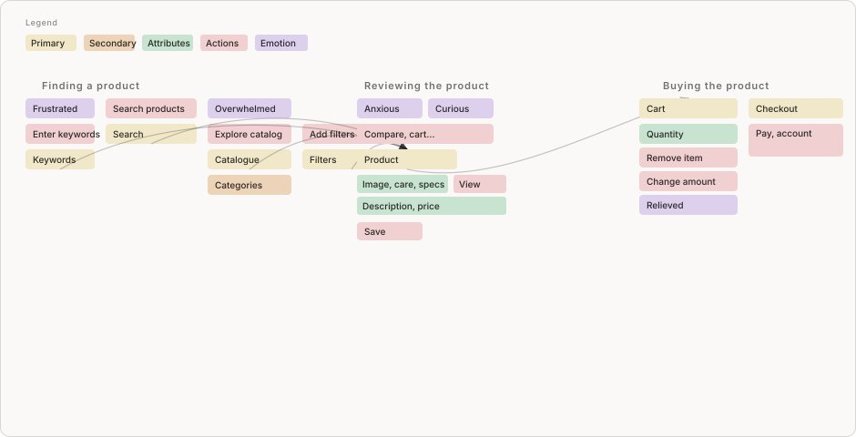

Karnaluks redesign
01
Reimagining a craft supply shop to feel more like an inspiring studio — shifting from a product catalog into a place that supports inspiration, creativity, and reflection.
CONTEXT
Karnaluks is a craft supply store with a wide range of hobbies; the physical shop is loved, but the website felt purely transactional and overwhelming.
GOAL
Rethink the website through emotional design — from catalog to a place that supports inspiration, creativity, and reflection.
WHAT I DESIGNED
A before-and-after homepage concept and clickable prototype — so people can start from inspiration and intent, not only from material categories.


KEY IDEA
A craft store is more than a list of products — it's a starting point for someone's creative journey.
More about the process
RESEARCH

OOUX mapped core objects and actions from find → review → buy, so friction showed up as relationships, not only screens.
KEY ISSUES
- Flat category grids with little hierarchy — hard to scan.
- Long lists without filters that match how people choose.
- Expert jargon that pushes newcomers away.
- Overall readability suffered.
EMBODIED RESEARCH
A small embodied study (cooking — outside my comfort zone) highlighted how starting points, play, and picturing a finished piece pull people forward.
INSIGHTS
- Beginners want a clear starting point — what to make first.
- Creativity shows up in play and small adjustments.
- Motivation lifts when people see the finished piece in mind.
- Appreciation helps the process stick in memory.

How it took shape
Four moves from technical browsing to reflection, each mocked in Figma and checked in Lovable for tone and flow. The screens below are the outcomes — each move responds to something that was broken in the old experience.
Before: it felt like a dense catalog, not a studio — taxonomy and copy assumed expert material knowledge, and there was little help when people felt stuck or uninspired.
Directions in the prototype
Conversational filtering — outcomes and feel, not only specs; filters ask about tactility and composition too.
Problem it addresses: Finding materials meant drilling through technical filters and labels, not the outcome or feel you wanted.
Inspiration-first landing instead of category walls; a short style quiz opens personalised mood boards for stuck users, plus fabrics, Pinterest, and peer work.
Problem it addresses: The homepage and category walls gave no inspiring entry when you didn’t already know what to make.
Product pages foreground real customer work and what you can make with each material — making inspiration achievable, not only aspirational.
Problem it addresses: Product views didn’t show real projects or what a material was for — ideas stayed abstract.
Inspiration Diary — save ideas, note projects, and track preferences over time.
Problem it addresses: There was nowhere to save inspiration or see your taste accrue when motivation dipped.